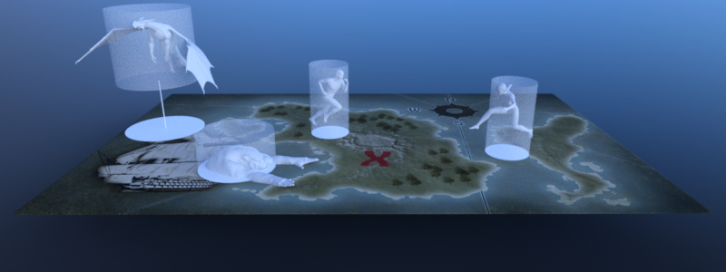

Using NavigationMaps

A NavigationMap is an abstract navigation world on the NavigationServer identified by a NavigationServer RID.
A map can hold and connect a near infinite number of navigation regions with navigation meshes to build the traversable areas of a game world for pathfinding.
A map can contain avoidance agents. Collision avoidance will be calculated based on the agents present in the map.
Note
Different NavigationMaps are completely isolated from each other but navigation regions and avoidance agents can switch between different maps. Switches will become effective on NavigationServer synchronization.
Default navigation maps
By default Godot creates a navigation map for each World2D and World3D of the root viewport.
The 2D default navigation map RID can be obtained with get_world_2d().get_navigation_map() from any Node2D inheriting Node.
The 3D default navigation map RID can be obtained with get_world_3d().get_navigation_map() from any Node3D inheriting Node.
extends Node2D
func _ready() -> void:
var default_navigation_map_rid: RID = get_world_2d().get_navigation_map()
public partial class MyNode2D : Node2D
{
public override void _Ready()
{
Rid defaultNavigationMapRid = GetWorld2D().NavigationMap;
}
}
extends Node3D
func _ready() -> void:
var default_navigation_map_rid: RID = get_world_3d().get_navigation_map()
public partial class MyNode3D : Node3D
{
public override void _Ready()
{
Rid defaultNavigationMapRid = GetWorld3D().NavigationMap;
}
}
Creating new navigation maps
The NavigationServer can create and support as many navigation maps as required for specific gameplay. Additional navigation maps are created and handled by using the NavigationServer API directly e.g. to support different avoidance agent or actor locomotion types.
For example uses of different navigation maps see Support different actor types and Support different actor locomotion.
Each navigation map individually synchronizes queued changes to its navigation regions and avoidance agents. A navigation map that has not received changes will consume little to no processing time. Navigation regions and avoidance agents can only be part of a single navigation map but they can switch map at any time.
Note
A navigation map switch will take effect only after the next NavigationServer synchronization.
extends Node2D
func _ready() -> void:
var new_navigation_map: RID = NavigationServer2D.map_create()
NavigationServer2D.map_set_active(new_navigation_map, true)
public partial class MyNode2D : Node2D
{
public override void _Ready()
{
Rid newNavigationMap = NavigationServer2D.MapCreate();
NavigationServer2D.MapSetActive(newNavigationMap, true);
}
}
extends Node3D
func _ready() -> void:
var new_navigation_map: RID = NavigationServer3D.map_create()
NavigationServer3D.map_set_active(new_navigation_map, true)
public partial class MyNode3D : Node3D
{
public override void _Ready()
{
Rid newNavigationMap = NavigationServer3D.MapCreate();
NavigationServer3D.MapSetActive(newNavigationMap, true);
}
}
Note
There is no difference between navigation maps created with the NavigationServer2D API or the NavigationServer3D API.